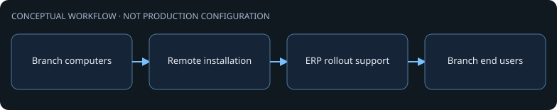

Deployment support / Support engagement
Branch ERP Rollout Support
Remote installation and technical support for branch computers during ERP rollout.
Business context
Branch computers required remote installation and technical support during an ERP rollout.
Scope and responsibilities
- Provided remote branch computer installation for the ERP rollout.
- Provided IT support during deployment as MIS IT Unit Head.
Conceptual workflow

Illustrative workflow based on résumé descriptions; not an actual production diagram.
Business value
Remote support facilitates branch adoption and deployment activities. The ERP vendor, branch count, go-live dates and deployment outcomes were not provided.
Evidence to add when approved
- Approved rollout checklist
- Sanitized support record
- Verified scope and completion milestones